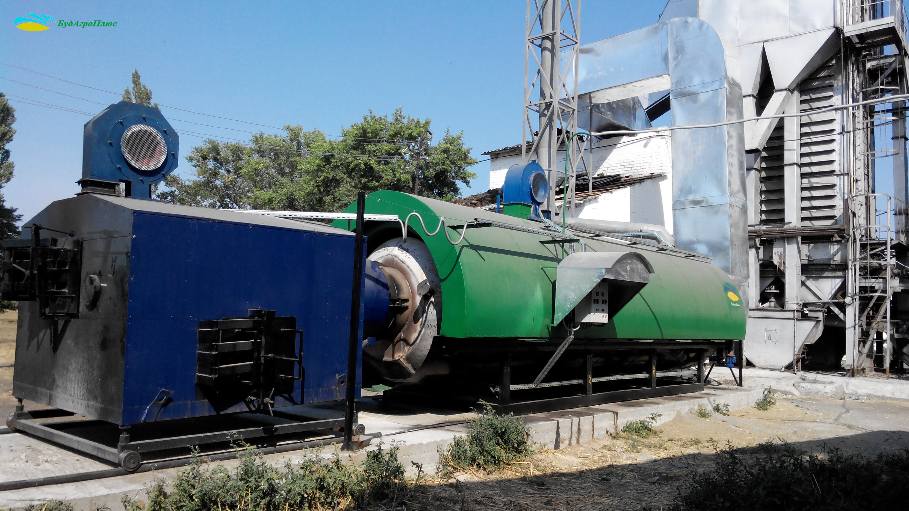
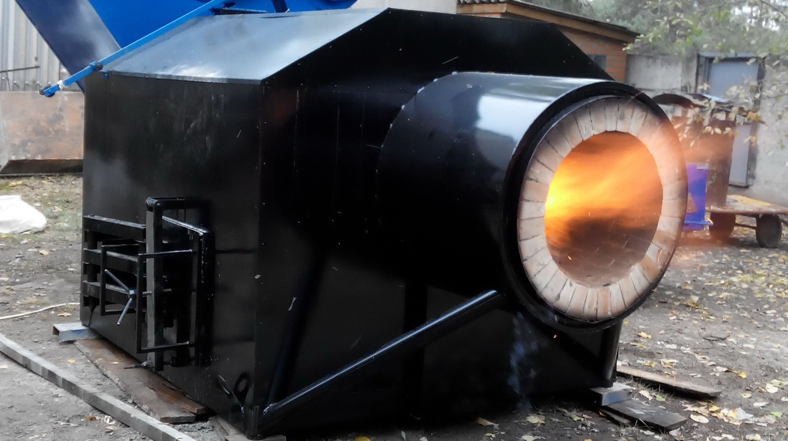
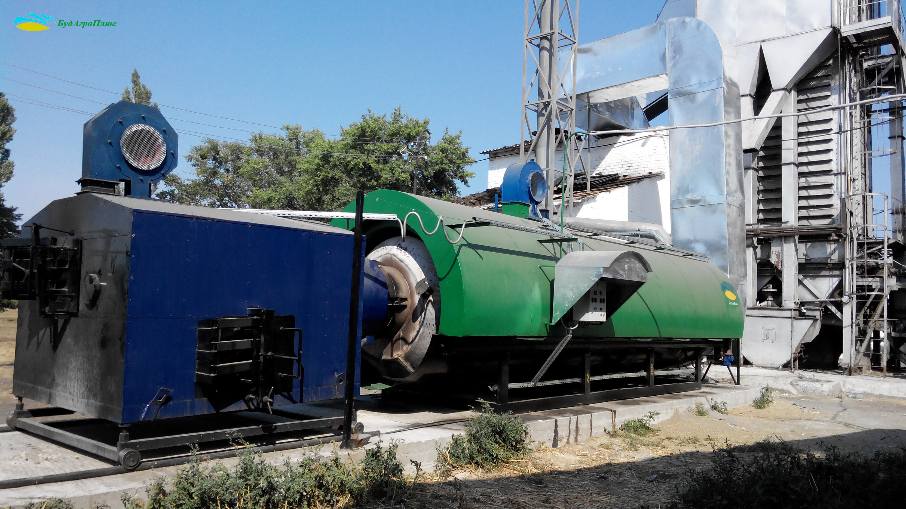
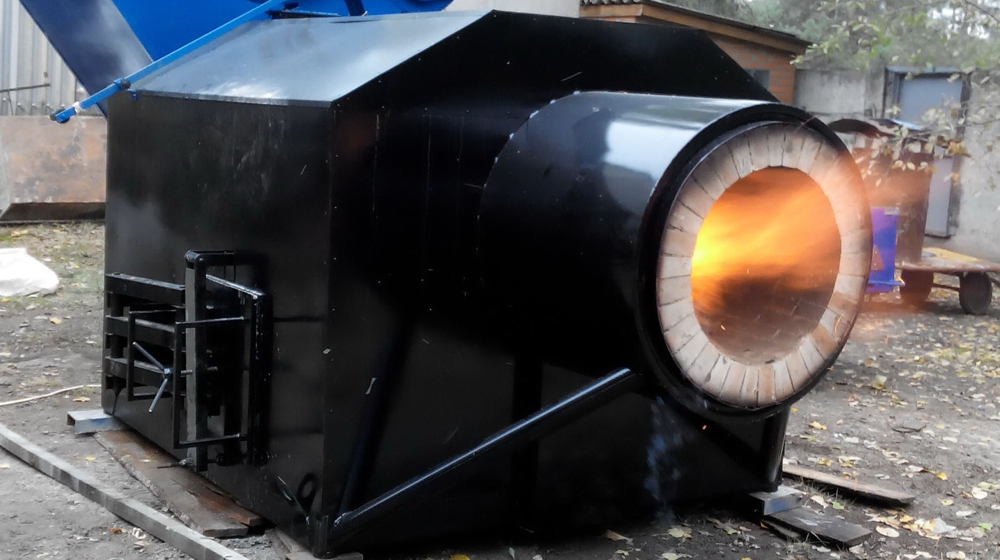

Теплогенератор біопаливний ГТУ

 
Теплогенератори, що виробляє компанія «Будагроплюс» призначені для отримання теплого повітря у великому обсязі при мінімальних затратах палива. Перевага теплогенератора, розробленого нашою фірмою полягає в тому, що паливом для нього можуть служити відходи від деревообробних виробництв (тирса, стружка), пеллети, а також рослинні відходи сільськогосподарського виробництва (лушпиння соняшника, відходи зернових, подрібнена солома, щепа, костриця).
Дана перевага є вагомим фактором при виборі теплогенеруючої установки для підприємства із-за надмірно високих цін на традиційні теплоносії - природний та скраплений газ, дизельне паливо тощо.
Завдяки інноваційним конструкторським рішенням, які були впроваджені при проектуванні теплогенератора вдалося зберегти високі енергетичні характеристики обладнання при мінімальному споживанні альтернативного палива.
Замовити обладнанняДана перевага є вагомим фактором при виборі теплогенеруючої установки для підприємства із-за надмірно високих цін на традиційні теплоносії - природний та скраплений газ, дизельне паливо тощо.
Завдяки інноваційним конструкторським рішенням, які були впроваджені при проектуванні теплогенератора вдалося зберегти високі енергетичні характеристики обладнання при мінімальному споживанні альтернативного палива.